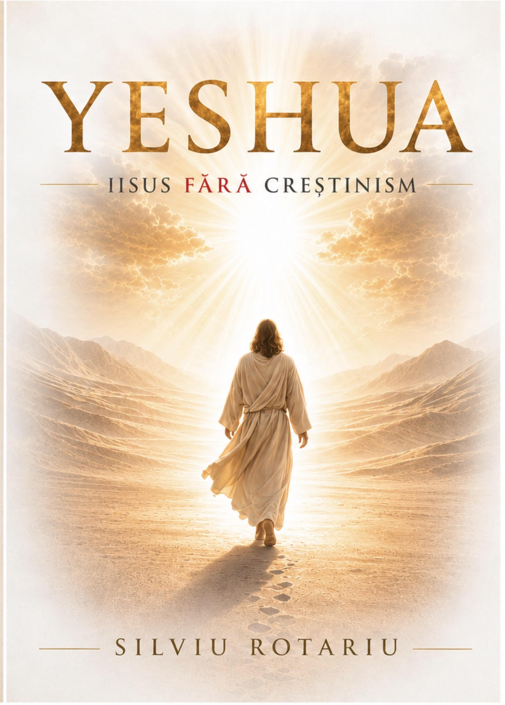

Iisus Fără Creștinism
O călătorie îndrăzneață dincolo de dogme și tradiții religioase, în căutarea omului real din spatele celui mai influent nume din istorie. Cine a fost, cu adevărat, Yeshua din Nazaret?
Există o diferență uriașă între Iisus — personajul construit de secole de teologie, concilii și interese politice — și Yeshua, omul care a trăit, a vorbit și a murit în Palestina secolului I. Această carte pornește tocmai de la această diferență.
Silviu Rotariu nu scrie o carte împotriva credinței. Scrie o carte pentru ea — pentru o credință autentică, eliberată de straturile de interpretare care adesea ascund mai mult decât revelează. Prin cercetare riguroasă și limbaj accesibil, autorul reconstituie figura istorică a lui Yeshua din sursele primare, în contextul iudaismului de epocă.
„Nu trebuie să alegi între știință și credință. Trebuie să ai curajul să le privești pe amândouă cu aceeași onestitate."
Cartea nu oferă răspunsuri definitive — oferă ceva mai valoros: uneltele pentru a-ți pune propriile întrebări.
Cine a fost cu adevărat omul din Nazaret, dincolo de teologia ulterioară.
Contextul cultural și religios care l-a format și care explică mesajul său.
Cum a evoluat creștinismul departe de rădăcinile sale evreiești originare.
Ce înseamnă figura lui Yeshua pentru omul contemporan care caută sens.
"Nu m-am temut de întrebări. M-am temut de o viață trăită fără să le pun. Această carte este acel curaj scris pe hârtie.
— Silviu Rotariu
„Am citit cartea dintr-o răsuflare. Silviu reușește ceea ce puțini îndrăznesc — să vorbească despre Hristos cu dragoste și cu curaj intelectual în egală măsură. Nu m-a scuturat din credință, ci mi-a adâncit-o."
„Am evitat mult timp cărțile despre Iisus, temându-mă că vor fi fie propagandă religioasă, fie atacuri ateiste. Aceasta nu e nici una, nici alta. E pur și simplu onestă — și asta e mai valoroasă decât orice."
„Un gest de curaj rar în cultura noastră. Rotariu scrie cu erudiție, dar fără aroganță — fiecare pagină simți că e scrisă de cineva care chiar iubește subiectul și respectă cititorul."
Disponibilă în format tipărit. Livrare prin Sameday Easybox, doar pe teritoriul României. Comandă astăzi și primește un semn de carte exclusiv, dedicat cărții.
Plată securizată cu cardul · Livrare prin Sameday Easybox · Comenzile se deschid foarte curând